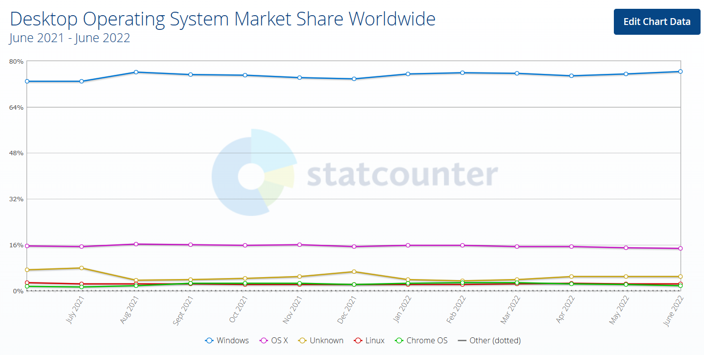
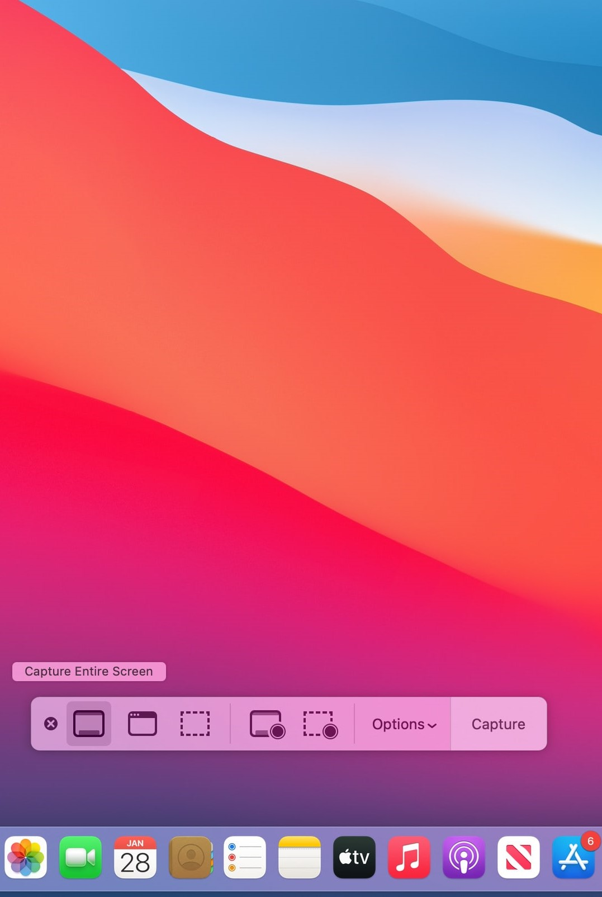
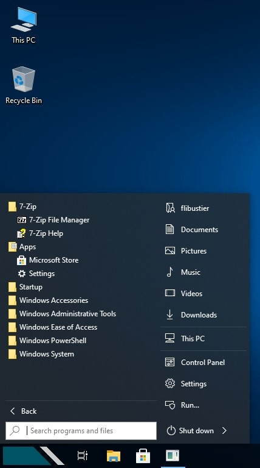
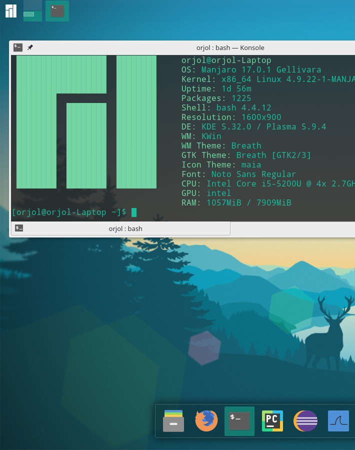

Сегодня поговорим о современной ОС (Операционная система).
- Операционная Система ОС
- Это базовый комплекс управляющих и обрабатывающих программ,
обеспечивающий эффективное манипулирование аппаратными средствами устройства,
работы с файлами, ввод-вывод данных и дальнейшее управление ими.
- Это программа, которая обеспечивает возможность рационального
использования оборудования компьютера
По данным сайта StatCounter июня 2021 года по июнь 2022 года
Современные операционные системы, такие как Windows 10,
macOS Big Sur и Ubuntu 20.04, обладают мощными возможностями.
- Windows - 76.31%
- MacOS 14.66%
- Неизвестные - 4.88%
- Linux - 2.43%
- Chrome OS - 1.72%
- FreeBSD - 0.01%


MacOS
В macOS используется ядро XNU, основанное на микроядре Mach и содержащее программный код, разработанный компанией Apple, а также код из ОС NeXTSTEP и FreeBSD.
Найти больше

Windows10
Операционная система корпорации Microsoft, ориентированных на управление с помощью графического интерфейса. MS-DOS - является прародителем Windows.
Найти больше

Manjaro
Дистрибутив GNU/Linux, основанный на Arch Linux, использующий модель обновлений rolling release. Официально доступно несколько версий: с рабочим окружением Xfce, KDE Plasma или GNOME.
Найти больше
- Bios
- это набор микропрограмм, определяющих первоочередное поведение компьютера и подключенного к нему оборудования
- это встроенное в компьютер программное обеспечение, которое ему доступно без обращения к диску.
- Центральный Процесор
- Электронный блок либо интегральная схема, исполняющая машинные инструкции (код программ),
главная часть аппаратного обеспечения компьютера или программируемого логического контроллера.
Иногда этот компонент называют просто процессором.
- Оперативная память
- Оперативная память, или RAM — память с произвольным доступом.
- Видеокарта
- Видеока́рта — устройство, преобразующее графический образ
"Windows" — это операционная система, разработанная и выпускаемая корпорацией Microsoft. История Windows начинается в конце 1980-х годов, когда Microsoft решила создать графический интерфейс пользователя (GUI) для своей популярной операционной системы MS-DOS.
Первая версия Windows, Windows 1.0, была выпущена в ноябре 1985 года. Однако, она не получила широкого распространения из-за ограниченных возможностей и недостаточной стабильности.
Позднее, Microsoft выпустила Windows 3.0 в 1990 году, которая стала первой популярной версией Windows и поставлялась в комплекте с многими компьютерами. Windows 3.0 принесла с собой значительные улучшения в интерфейсе пользователя, возможностях мультитаскинга и поддержке TrueType шрифтов.
Дальнейший успех Windows продолжился с выпуском Windows 95 в 1995 году, которая внесла множество новых функций, включая новый интерфейс, поддержку Plug and Play, и значительное улучшение в поддержке мультимедийных приложений.
Затем последовали выпуски Windows 98, Windows 2000, Windows XP, Windows Vista, Windows 7, Windows 8 и Windows 10, каждая из которых вносила новые функции, улучшения в производительности и интерфейсе, а также разнообразные инновации в области безопасности и мобильности.
Сегодня Windows 10 является основной операционной системой на многих компьютерах по всему миру, и Microsoft продолжает обновлять ее, предлагая новые функции и улучшения для пользователей.
Линукс (Linux) - операционная система с открытым исходным кодом, разработанная Линусом Торвальдсом в 1991 году.
История Linux началась, когда Торвальдс решил создать свою собственную операционную систему, вдохновленный UNIX и его принципами.
Он начал работу над проектом в университете Хельсинки, и в скором времени множество разработчиков со всего мира присоединились к проекту, что привело к быстрому развитию и усовершенствованию системы.